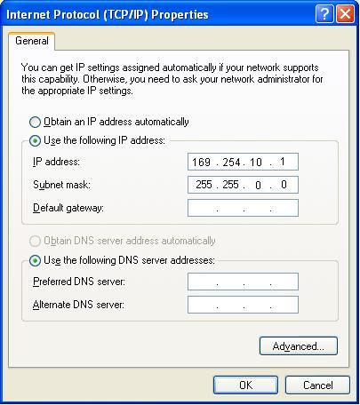

Connecting to a Windows XP/SP3 PC
There are two steps to set up the ARM and MIPS models on Windows XP.
Procedure
- Install the USB drivers. See Installing the USB Driver Software.
- Set the Windows network adapter to use a static IP address. See Configuring the Windows XP Network Adapter to Use a Static IP Address.
Sourcery Probe Personal for PowerPC installs a custom USB driver which does not use TCP/IP communication. This section does not apply to those models.
| Note | |
|
XP Service Pack 3 is required when using Sourcery Probe Personal with Windows XP. |
|
Installing the USB Driver Software
This section provides the steps required to install the drivers for your probe.
Procedure
- Connect the USB cable to your probe and to your PC. After a few seconds, the Found New Hardware Wizard appears. Install the USB drivers.
| Note | |
|
The hardware name (Mentor Embedded USB JTAG Probe) shown in the warning message is the correct driver name for the Sourcery Probe Personal. |
|
- Set the XP network adaptor to use a static IP address. See Configuring the Windows XP Network Adapter to Use a Static IP Address.
Configuring the Windows XP Network Adapter to Use a Static IP Address
The Sourcery Probe Personal models for ARM and MIPS use remote RNDIS for TCP/IP communication to Windows over USB. If you are using Windows XP, the probe and PC automatically negotiate their IP addresses, so no manual setup is required. However, because this negotiation can take an extended time to complete, XP might report the network has limited or no connectivity. To avoid this, you can set the Windows Network Adapter to use static IP addresses. In general you can leave the probe configured for Local Link (automatic) mode, but we recommend that you set the PC to a compatible static IP address.
Prerequisites
Before setting the XP network adapter static IP address, you must pick a suitable address. The address must be unique, but within the same range as the probe's address. New probes are configured for Local Link mode, which means the probe will assign itself an address in the range 169.254.xxx.yyy. You may want to check what value the probe picked using the Sourcery Probe Console, but in practice you can probably just pick any number from 1-254 for each of xxx and yyy. If the PC reports that the address you chose is already in use, then just try another value for xxx or yyy.
However, if the probe was reconfigured to use a static IP address, then you must pick an address within the range set in the probe. If the probe's IP address is unknown, you can find it by using the Sourcery Probe Personal Console Menu.
Example 2‑1. mep_update Console Output
MEP Update Ver 0.1.0 Copyright 2010 Mentor Graphics Inc.
Scanning for visible Probes...
Model: Serial #: IP Addr: UnitName:
0: MESP-Personal / ARM 07380004 169.254.156.36
1: MESP-Pro / MIPS FSL016F52 134.86.178.205 FSL016F52
Hostname: sj178dy205.my_network_name
Select a Probe 0..6, q> q
Procedure
- On your desktop, right-click My Network Places and click Properties.
- Right-click the network connection associated with Sourcery Probe Personal. Note that the Local Area Connection number will differ from one computer to another and from one USB port to another.
- Click Properties in the dropdown menu.
- In the connection’s properties dialog box, click Internet Protocol (TCP/IP). Then, click the Properties button.
- Choose Use the following IP address.
- Select the static IP address option for the network adapter and enter the address chosen above, as shown in Figure 2‑2.
The Subnet mask should always be 255.255.0.0 when using IP addresses in the local link range. If you set the probe and PC to IP addresses in a different range, then the subnet mask would typically be 255.255.255.0 (on both probe and PC) and the Gateway field should remain blank.
Figure 2‑2.  IP Properties Dialog
- Click OK to accept these changes.
- Click OK to close the Properties dialog box for the connection.
- Close My Network Places.
- If you know the IP address of the probe, you should be able to ping the probe over USB using its IP address (for example, 169.254.85.218). The first time you ping, it can require some time to establish the connection.
ping 169.254.85.218
Related Topics